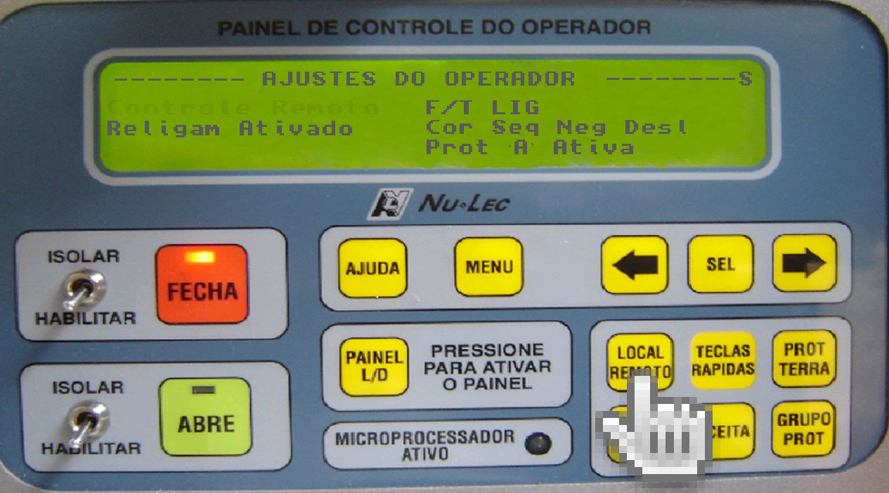
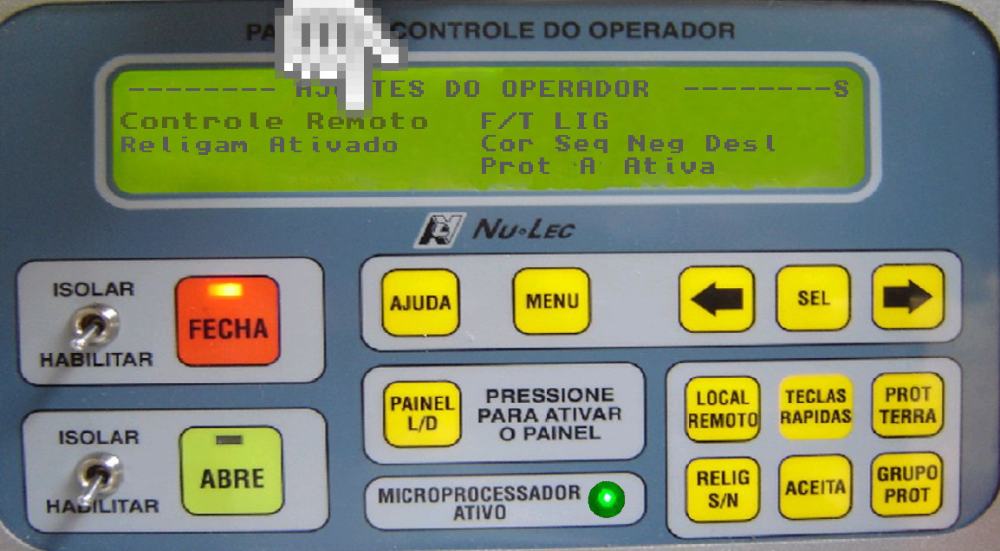
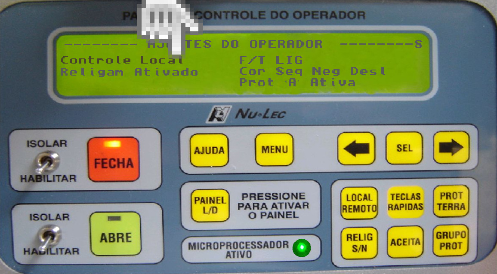
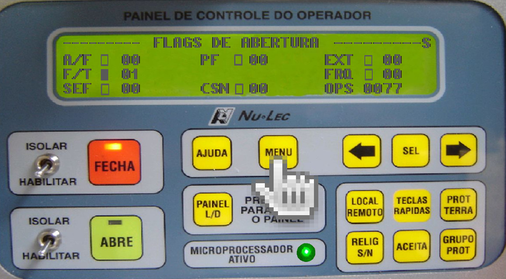
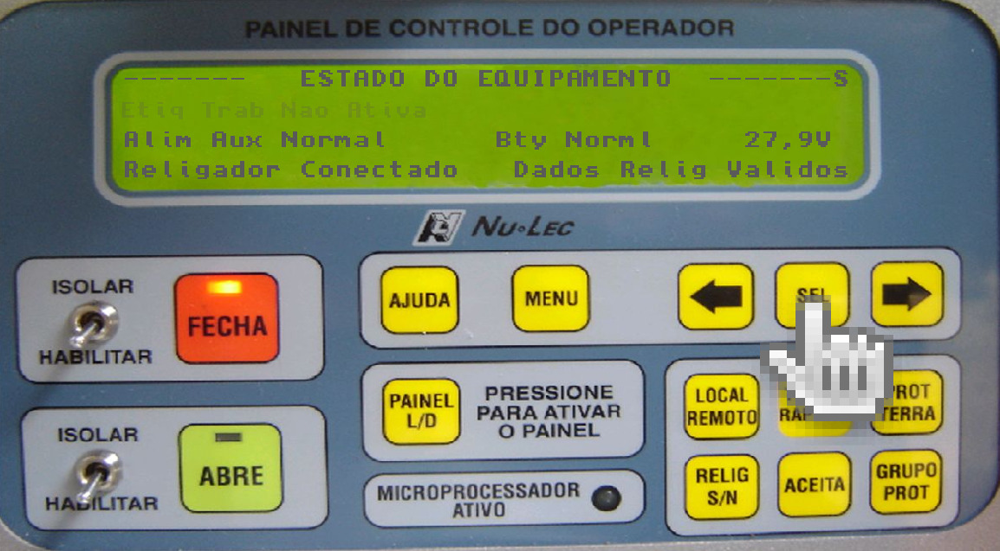
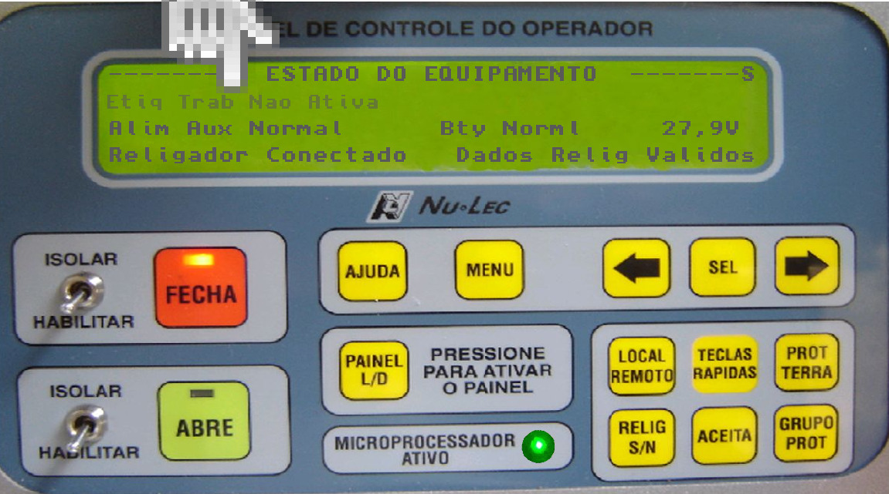

Passo 1 - Aperte a tecla "PAINEL L/D", verificar se o painel está ACESO!
Passo 2 - Aperte a tecla "LOCAL REMOTO".

Passo 3 - Verificar no "DISPLAY" a condição se está como "Controle Remoto".

Passo 4 - Aperte novamente a tecla "LOCAL REMOTO".

Passo 5 - Verificar no "DISPLAY" a condição se está como "Controle Local".

Passo 6 - Aperte a tecla ACEITA
Passo 7 - Aperte a tecla MENU até a tela FLAGS DE ABERTURA

Passo 8 - Aperte a tecla ⇒ (DIREITA) 3 vezes, até chegar na opção ESTADO DO EQUIPAMENTO.

Passo 9 - Aperte a tecla SEL

Passo 10 - Verificar no "DISPLAY" a condição "Etiq Trab Nao Ativa".

Passo 11 - Aperte a tecla ⇒ (DIREITA) 1 vez.
Passo 12 - Verificar no "DISPLAY" a condição "Etiq Trab Ativa".
Passo 13 - Aperte a tecla ACEITA